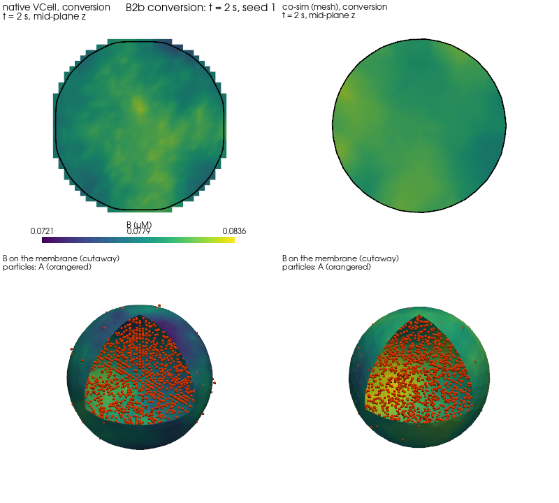
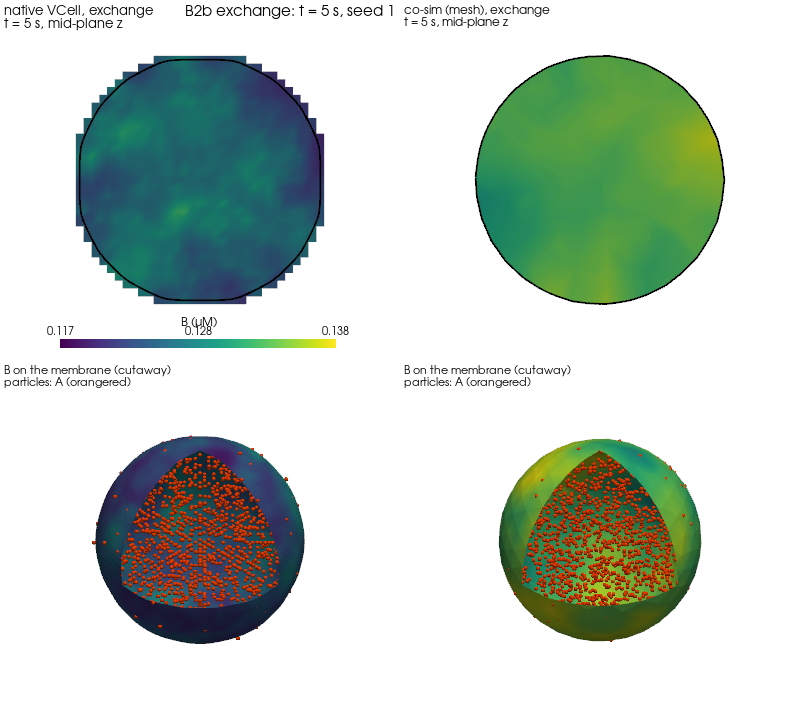
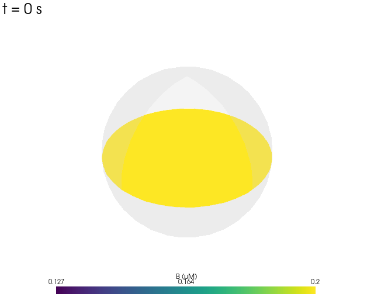
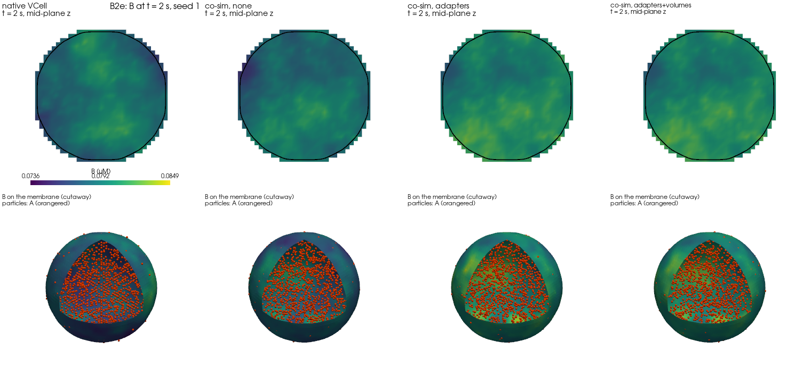
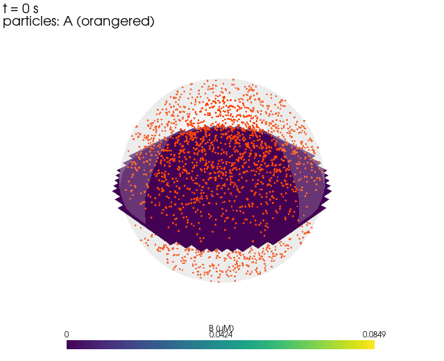
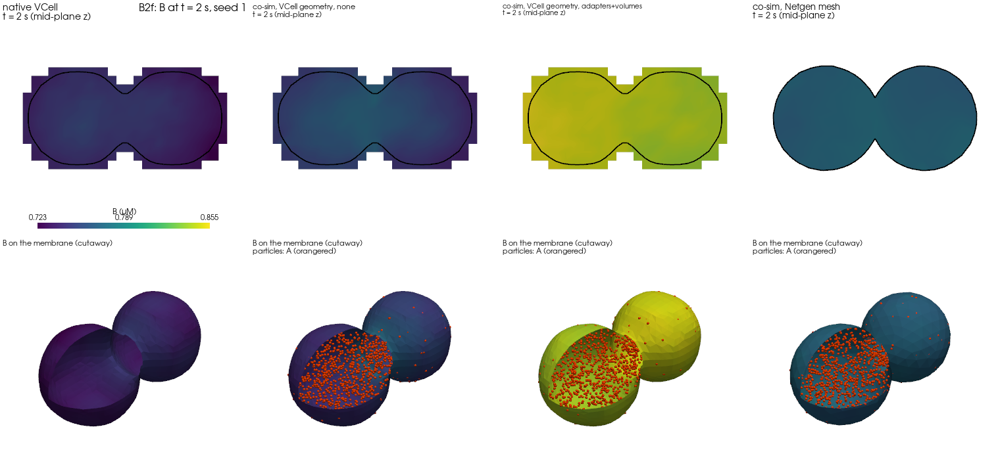
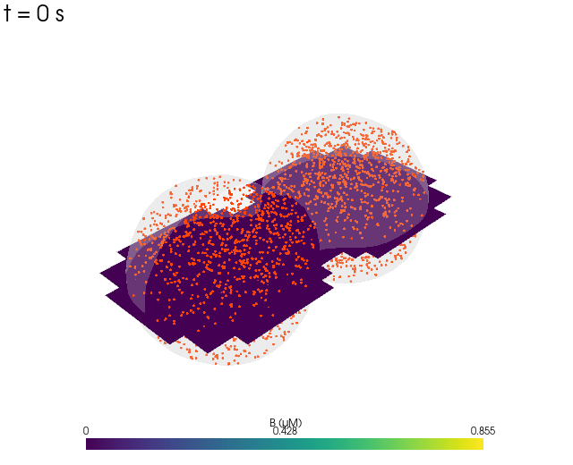

hybrid-generalizability — figure gallery
19 figures across 9 studies. Use the list on the left to jump to any study; each figure has its own ↓ download.
PDE engine swap, FV (VCell FV_SOLVER scheme) vs FEniCSx Q1 under the same coupling
fenicsx-same-problem
Hybrid co-simulation with a body-fitted unstructured PDE mesh (ball)
unstructured-geometry
Same ball, two discretizations: native VCell (Cartesian + membrane numerics) vs co-simulation (body-fitted P1)
sphere-cosim-vs-native






Fields next to a curved membrane: native VCell on pyvcell's smoothed grid vs co-sim on a body-fitted mesh
near-membrane-fields
Removing the co-simulation's boundary artifact: particle transfer, membrane geometry and curved-compartment creation
cosim-boundary-transfer
The co-simulation on VCell's own geometry: staircase PDE, smooth membrane, accessible-volume correction
vcell-geometry-cosim




One non-convex GeometryDescription, three solver paths: native VCell, co-sim on VCell's geometry, co-sim on a Netgen mesh
dumbbell-three-ways




Operator-splitting schemes for PDE/particle coupling: Jacobi (fvsolver), Gauss–Seidel, Strang
splitting-schemes
The hybrid model described in SBML Spatial, run on both solvers
sbml-spatial-hybrid